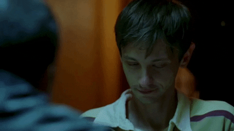
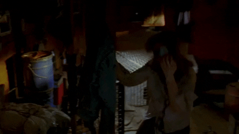

CRIMINAL MINDS
Criminal Minds
Criminal Minds is an American thriller, mystery and crime drama. It revolves around the methodology and psychosis of criminals.
The show is produced by Jeff Davis and first aired in 2005 and lasted till 2020. It ran for a total of 15 seasons consisting of 324
episodes. Primarily the show follows a team of specialists from the FBI known as the BAU (behaviourial analysis unit.)
Throughout the 15 seasons the main members of the group Aaron Hotchner/Hotch (Thomas Gibson), Derek Morgan (Shemar Moore), Spencer Reid
(Matthew Gray Gubler), Jennifer Jareau (A. J. Cook), Penelope Garcia (Kirsten Vangsness), Emily Prentiss (Paget Brewster) and David Rossi (Joe Mantegna) work
as a team to solve crimes. However the cast changes up a lot and brings back old characters frequently.
The episodes normally follow a story board of opening up with the crime being committed and the BAU getting called in to profile the killer.
Criminal Minds stands out from other crime shows by specializing in the psychology of killers and their more graphic scenes (torture and the killing of victims.)
So it is definitely not a show for the faint of hearts.
Criminal Minds became one of the top watched shows on the CBS in America leading to a number of spin offs including Criminal Minds: Beyond
Borders, Criminal Minds: Suspect Behaviour and even a Korean version of Criminal Minds. Surprisingly the spin offs did not do as well and did not
bring in enough views. Beyond Borders only made it up to season 2 whilst Suspect Behaviour never made it to the season 1 finale.
Season One Pilot
WARNING: POTENTIAL TRIGGERING IMAGES AHEAD (KIDNAPPING, MINOR VIOLENCE)
Heather Woodland getting kidnapped (S1E1)
Following the kidnapping the BAU are brought in to solve the crime as evidence is limited and Heather has just been kidnapped. The show then introduces us to the main characters out of work, offering an insight to their personal lives and characters. Hotch and his wife Haley (Meredith Monroe) are in a more domestic situation, where Haley is pregnant with their first child. Hotch and Haley coming up with potential baby names. We see the effect of working in the BAU has on Hotch as he ties the names with serial killers he has captured before, making the moment bittersweet. Furthermore the moment is interrupted when Hotch gets called into work. Haley hugs him understanding how important work is to him and Hotch reluctantly leaves. Morgan is the second to be introduced already given the trope of being the 'hunk' of the show. He's attractive and a ladies man giving him no unique characteristics at this point. Gideon titled as the team leader given his experience and knowledge. His skills are shown straight away when he's teaching a room of students and immediately profiles the 'footpath killer.' Interrupted by Reid the teams genius with an IQ of 187 and an eidetic memory. Although the season's team consists of more members only four of them are introduced in the first half of the episode.

The team travels to Seattle to investigate the kidnapping of Heather with a time line of 48 hours. The show hints of Gideon's post traumatic stress disorder (PTSD) from working on the field. Hotch is told to keep an eye on his mental stability and if he is able to take over for Gideon if he is unable to do his job. It's not until they catch the 'Seattle Strangler' who has an obsession with gideon that we learn that a member of the FBI died and Gideon performed CPR until their ribcage broke, which was why Gideon went on 6 month break.

To gather enough evidence to convict the 'Seattle Strangler' they confiscate his laptop. However they leave Morgan to crack the password instead of the technical expert Garcia. A skill that Morgan ends up 'forgetting' in the next 15 seasons (oop a minor plot hole.)

The pilot of the season